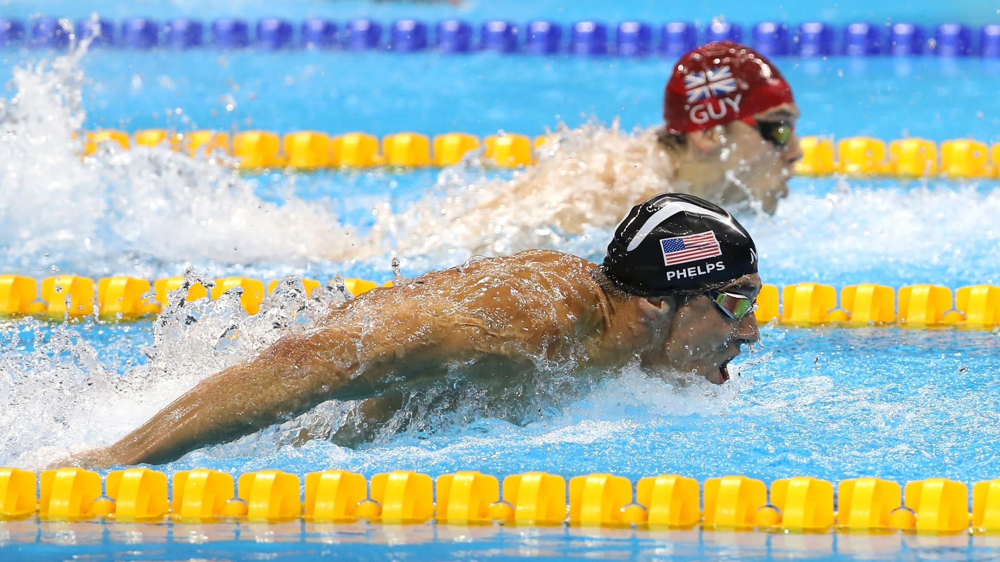

Home
Competitive Swimming
Competitive swimming is a sport where skilled swimmers race each other for the fastest times in specific swim lengths. These lengths vary depending on the competition and the participant’s age level and may include multiple pool lengths.
Competitive swimmers typically use one or more stroke types during a competition, such as a backstroke or the butterfly stroke, while they swim.
Competitive swimming can take place at multiple levels and include various age groups. For example, competitions between high schools may include junior varsity and varsity teams from multiple schools. Activewear Meets typically include multiple groups, such as teams from several schools in a state. They may last for several hours, as well, giving swimmers the chance to compete in multiple events.
High-level competitive swimming may include multiple state-based or even national teams competing against each other. The most prominent competitive swimming events likely occur during the Summer Olympics. Here, the top swimmers from around the world compete to showcase their skills. Other high-level events include national and international championship events.